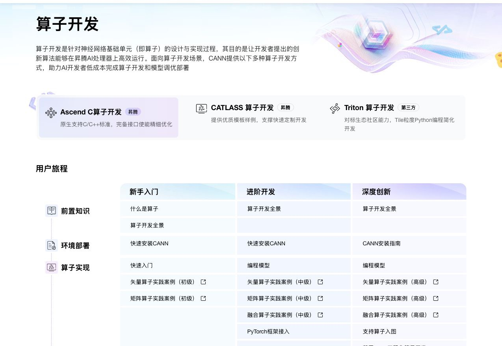
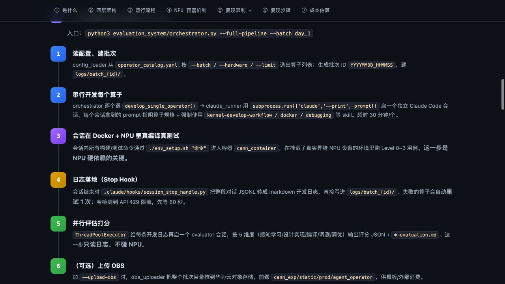
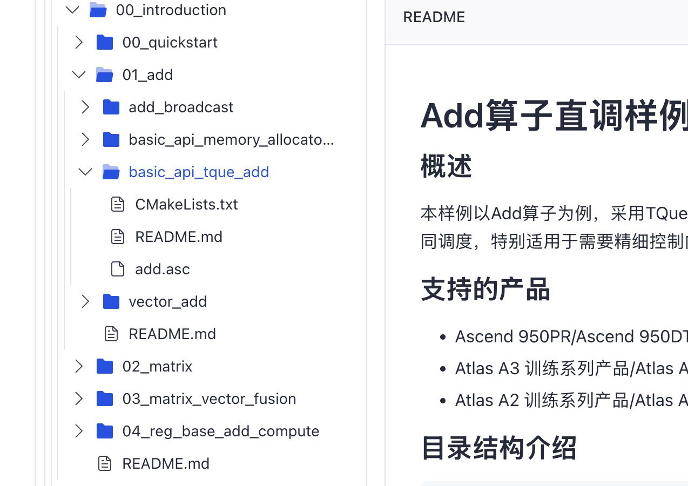
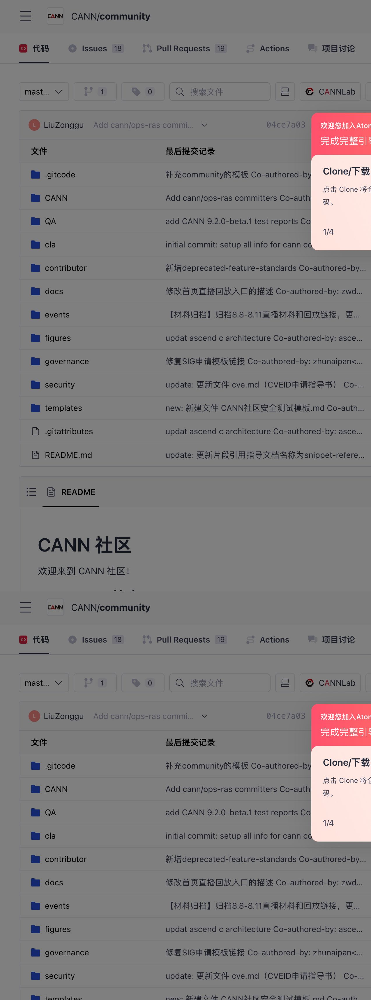
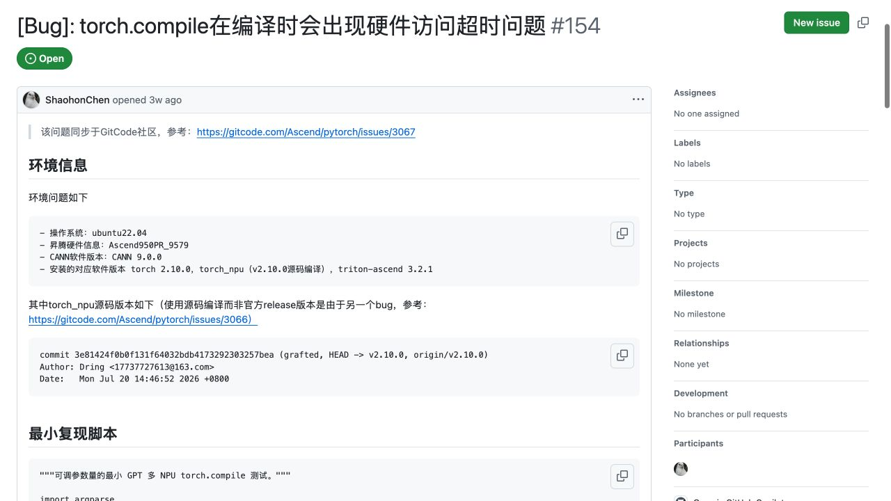
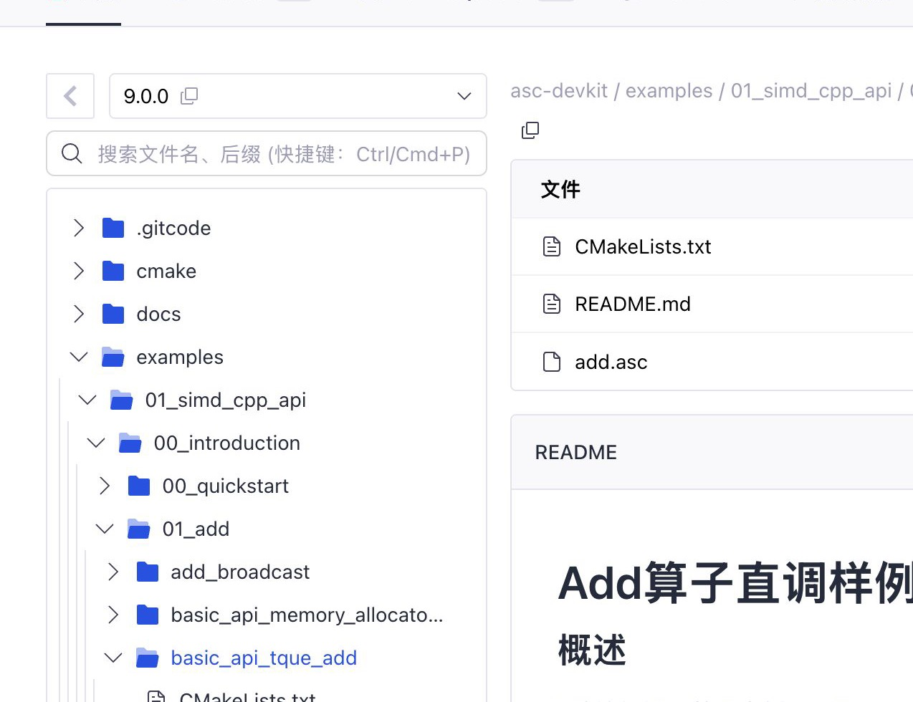

01
研究问题
Questions
旅程如何变化社区价值与增长
明确本次研究要回答什么
从 Ascend C 算子开发出发，基于公开案例、生态资产与 AI 工具机制，重新定义昇腾社区的价值、可装配能力与验证路径。
入口由站点导航变为搜索、对话、代码仓与同伴经验的混合。开发者需要在多源和 AI 之间完成版本、范围、责任与验证判断。
证据锚点：15 个公开案例均从项目目标、报错或版本选择进入。社区成为生态的可信协作层：连接权威来源、维护状态、真实任务结果和求助 / 贡献链路，让 AI 建议有依据，让开发者结果能复用。
价值判断：不是再存一份内容，而是降低任务完成风险。用外部可发现的任务入口获客，用低风险首跑激活，用上下文支持、更新与团队复用留存，用低摩擦回流让贡献影响可见。
研究命题：从“找到答案”转向“交付第一个真实结果”。环中心＝同类入口覆盖的平台数；环形分段与格子一致：绿色＝有，可直接配置或安装 / 接入；橙色＝有替代形态、内置或受边界限制；红色＝没有同类入口；灰色＝公开资料未确认。
这三类能力在五个平台中都有直接入口或清晰的等价配置，适合作为社区服务第一阶段的统一供给面。
这些能力仍然重要，但名称、配置位置、权限和运行边界并不一致，应以统一内容内核加各平台适配层来供给。
先将社区资料治理为项目规则、可引用知识与 MCP 可连接的状态；再把同一内容内核分别包装为 Skill、Command、Plugin、Agent 或 Hook，匹配各平台的直接入口。
一个资产可以派生多种形态。例如 GitCode Add 样例既可被检索，也可作为工程模板和运行配方；最终验证结果则作为执行证据回流，不把它误写成一个工具。

1路径 / 范围先选 Ascend C、CATLASS 或 Triton。这类权威路径应按版本被检索和引用，而不写死进工作流。
hiascend.com / developer / operator
2顺序 / 分支阶段、检查、错误分支和完成条件构成“方法”；任务状态触发它，而不是把它当作检索文本。
本仓 ascendc-agent-main / workflow Skill
3工程 / 构建add.asc、CMake、README 应保持在版本仓库：可按版本生成工程，再由 Skill、CLI 或 CI 执行构建。
GitCode 的 Issue / PR / CI / 日志适合经 MCP / API 受控读取和操作；运行输出再进入验证结论，Issue #154 这类“版本 + 硬件 + 复现 + 未解分支”则成为可接续问题对象。

4实时协作状态Issue、PR、分支和 Actions 持续变化，也有权限边界。Agent 应按需读取状态；创建、触发等动作必须受控并留下审计。
gitcode.com / cann / community
5条件 + 未解分支硬件、系统、CANN / 框架版本、最小复现与规模条件共同决定“方案是否适用”；它应作为可接续问题保留，不冒充一个工具。
github.com / Ascend / pytorch #154
6版本 + 构建入口样例能提供入口，不等于兼容、精度或性能已经成立。构建 / CI / NPU 输出、专家评审与责任人共同构成可交付结论。
gitcode.com / cann / asc-devkitMCP / API 负责访问和受控动作；案例状态负责跨入口接续；验证输出负责给出运行证据和责任结论。后两者是任务对象或执行产出，由相应领域团队维护。
公开案例中反复出现的版本、现场上下文、未解分支与责任缺口，决定了社区的价值不止是内容供给。
来源、版本、适用范围、验证记录与维护责任都可被引用和追溯。
任务、环境、日志、已尝试动作、未解条件与状态持续保留。
把建议交给 IDE、CLI、容器、CI 或真机，记录真实输出。
高风险问题按状态升级到 Issue、专家与版本计划，并把结果回流。
用自然语言、日志、代码或 IDE 上下文发起；补齐目标、环境与缺失条件。
Context / 任务会话按芯片、版本、框架与目标给出最小步骤，并显示来源和适用范围。
知识库 / Skill / Rules按任务选择 Command、模板、Plugin、MCP 或子 Agent，交给 Harness 调度并写回结果。
Command / Template / MCP / Subagent有运行证据才收敛；失败形成最小复现包并按风险升级。
Hook / CI / NPU / Issue已验证路径、反例与未解条件沉淀为下一次可用的知识与案例状态。
tool_result / 案例状态AI 的职责是理解、规划、调用与回填；社区服务的职责是维护可信资产、提供可装配能力、验证真实结果并明确责任归属。体验部定义任务体验和验收标准，领域团队负责各自能力的质量、版本与维护。
以一个自定义 Add 算子首跑为例：开发者始终在推进同一任务；社区资产在不同节点被转为可调用能力，后续四页逐步展开。
输入目标、芯片、CANN 版本、已有代码或报错。
任务简报 / 最小上下文从官方场景与版本资料确认应该走什么路径。
官方内容 → 知识库从 GitCode 样例生成工程，按方法执行并读回现场状态。
样例 → 模板；方法 → 工作流；状态 → MCP用 CI / NPU 输出判断编译、精度或性能是否成立。
运行输出 → 验证证据成功结论回流；失败带着复现包进入案例与专家升级。
Issue / 经验 → 案例状态这类内容的价值是“告诉 AI 什么条件下该走哪条路”，因此以版本化知识库和结构化检索供给，而不写进固定 Skill。
代码、配置和 README 仍留在版本仓库；AI 将它们组装为模板 / 配方。六阶段流程描述方法，CI / 日志描述现场，二者在执行中协同。
add.asc、CMake、README 与运行命令模型可以组织下一步，但不能自行宣布“精度已通过”或“性能可用”。Hook、Skill 与执行底座协同产生带环境、命令与结果的验证证据。
历史 Issue、CSDN 实践和专家经验都带条件与不确定性；应成为可对比、可订阅、可升级的问题状态，而不是被 AI 改写成无条件结论。
先以 Add 首跑连接“知识库 + Skill / Workflow + 模板 + MCP + 验证入口”；再接入子 Agent、Hook 和编译 / 精度报错的状态闭环。能力团队负责质量与版本维护，体验部负责任务体验、研究验证和跨团队优先级。
盘点文档、GitCode、案例、Issue、CI 与专家服务；按稳定性、实时性、风险、执行性和权限边界，区分知识库、Skill、模板、Command、Plugin、MCP、子 Agent、Hook，以及案例状态和验证证据。
体验部定义开发者何时看到、如何理解、如何确认和如何恢复；能力团队负责字段、权限、版本、运行质量与维护。
体验部通过真实任务回放、原型对照和行为数据识别断点，提出优先级与责任建议；各能力 Owner 负责修复、上线、版本 SLA 和质量运营。
招募不同主旅程的开发者，回放从入口到首跑或恢复的过程，校准角色、断点与优先任务。
对比现有多入口路径与“可信路径 + 执行验证 + 上下文升级”原型，观察是否减少选择和恢复成本。
接入任务漏斗和问题状态数据，判断哪些能力真正帮助开发者完成任务；质量运营和版本 SLA 仍由各能力 Owner 负责。